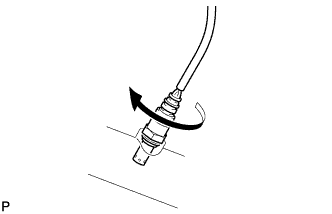
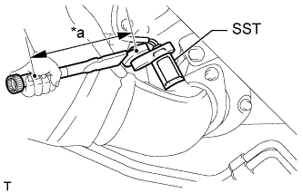

ВЫПУСКНАЯ ТРУБА > УСТАНОВКА |
| 1. УСТАНОВИТЕ ПОДОГРЕВАЕМЫЙ КИСЛОРОДНЫЙ ДАТЧИК (датчик 1 ряда 2) |
|  |
Вручную временно установите датчик в выпускную трубу.
 |
При помощи SST затяните датчик.
| *a | Длина рычага |
Подсоедините разъем датчика.
| 2. УСТАНОВИТЕ ПОДОГРЕВАЕМЫЙ КИСЛОРОДНЫЙ ДАТЧИК (датчик 2 ряда 2) |
Вручную временно установите датчик в выпускную трубу.
|  |
При помощи SST затяните датчик.
| *a | Длина рычага |
| 3. УСТАНОВИТЕ ПРИЕМНУЮ ТРУБУ № 2 В СБОРЕ |
Установите приемную трубу № 2 с новой прокладкой на выпускной коллектор с помощью 2 новых гаек.
Подсоедините разъем подогреваемого кислородного датчика.
| 4. УСТАНОВИТЕ КРОНШТЕЙН ОГРАНИЧИТЕЛЯ ВЫПУСКНОЙ ТРУБЫ |
Установите кронштейн ограничителя и закрепите его 2 болтами.
| 5. УСТАНОВИТЕ ПРИЕМНУЮ ТРУБУ В СБОРЕ |
 |
При помощи штангенциркуля замерьте длину пружины сжатия в свободном состоянии.
 |
С помощью молотка с пластмассовым покрытием и деревянного бруска запрессуйте новую прокладку до тех пор, пока ее поверхность не окажется на одном уровне с приемной трубой в сборе.
| *1 | Прокладка |
| *2 | Деревянный брусок |
Закрепите приемную трубу с новой прокладкой на выпускном коллекторе с помощью 2 новых гаек.
Подсоедините приемную трубу к выпускной трубе № 2 и закрепите ее 2 болтами.
Подсоедините разъем подогреваемого кислородного датчика.
| 6. УСТАНОВИТЕ ЦЕНТРАЛЬНУЮ ВЫПУСКНУЮ ТРУБУ В СБОРЕ |
Установите центральную выпускную трубу на 3 опоры выпускной трубы.
Установите центральную выпускную трубу и закрепите ее 2 пружинами сжатия и 4 болтами.
| 7. УСТАНОВИТЕ ВЫХЛОПНУЮ ТРУБУ В СБОРЕ |
Установите выхлопную трубу на опору выпускной трубы.
Установите новую прокладку на центральную выпускную трубу.
Вверните 2 болта.
| 8. ПРОВЕРЬТЕ, НЕТ ЛИ УТЕЧЕК ОТРАБОТАВШИХ ГАЗОВ |